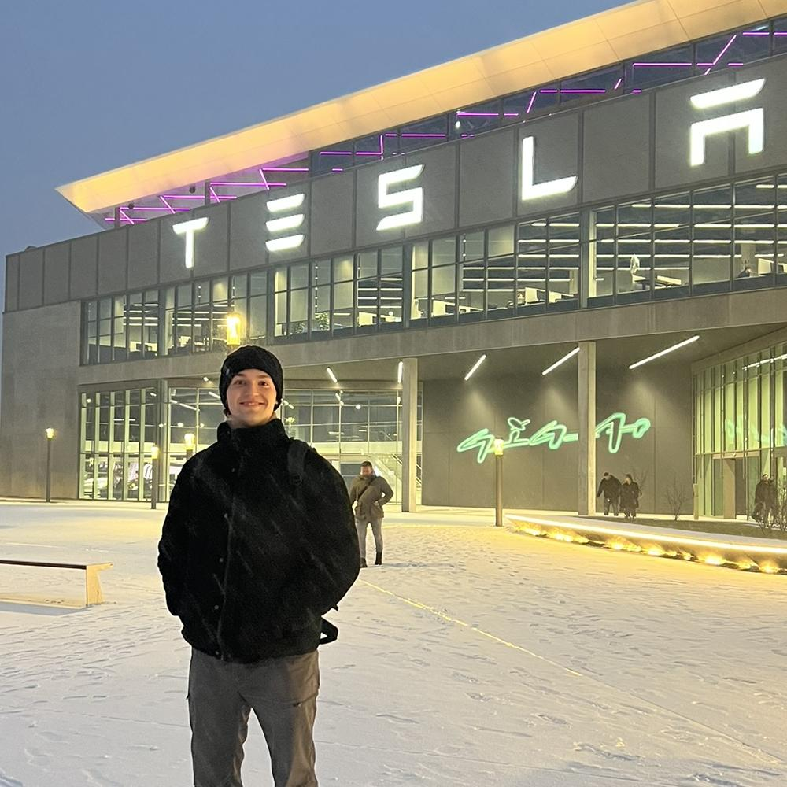

I build the data pipelines, dashboards, and reporting models that turn raw operational data into decisions — currently supporting a workforce of 11,500+ at Tesla, with a quantitative foundation in engineering, probability, and statistics.

I'm a Production Engineer with almost two years of professional experience as a Data Analytics Engineer at Tesla, where I build the data pipelines, dashboards, and reporting models that inform decisions for a workforce of 11,500+.
My engineering training gave me a solid quantitative foundation in mathematics, probability, and statistics, and my day-to-day work turning raw operational data into reliable, decision-ready analysis has shown me how much further I could take that foundation with rigorous, formal study in statistical methods.
I'm continuing to deepen my theoretical grounding in statistics, R, and data science while applying that learning directly in industry — having lived and studied across Brazil, Italy, and Germany.
[Add a short description of this project.]
[Add a short description of this project.]
More on my GitHub. [Replace the placeholders above with your real projects.]
[Short intro to what you're currently exploring and why.]
[What you're learning and why it matters to you.]
[What you're learning and why it matters to you.]
[What you're learning and why it matters to you.]
A summary of my experience, education, and impact. Full detailed CV available for download.
The full CV includes complete role details, education history, and references. Download PDF
I'm always excited to discuss new challenges in data analytics, statistics, or workforce insights. Whether you're hiring or collaborating, I'd love to hear from you.